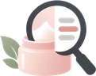
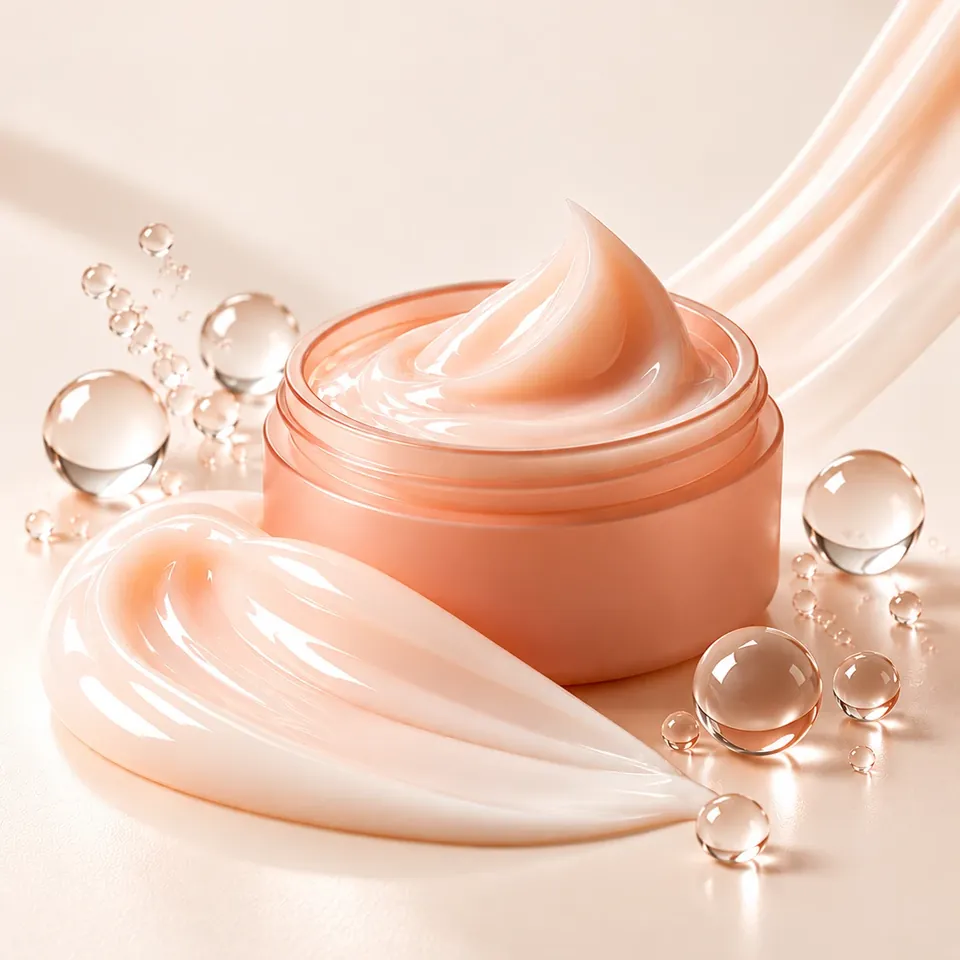

성분돋보기 출시 전 콘셉트, 판매하지 않아요새 크림을
준비하고 있어요

떠낼 때 모양이 잡히는 쫀쫀한 크림을 생각하고 있어요. 이런 크림이 나온다면 써 보고 싶은지 알려 주세요.
아직 판매하지 않는 콘셉트 테스트였어요. 관심 가져 주셔서 고마워요. 아래 질문에 답해 주시면 큰 도움이 돼요.
어떤 크림인가요
- 제형
- 떠낼 때 모양이 잡히는 쫀쫀한 크림
- 바르는 느낌
- 얇게 펴 발리고, 은은한 윤기가 남아요
- 쓰는 때
- 세안 뒤 스킨케어 마지막 단계, 아침과 저녁
- 용기
- 뚜껑을 돌려 여는 단지형
이름과 가격은 아직 정하지 않았어요.